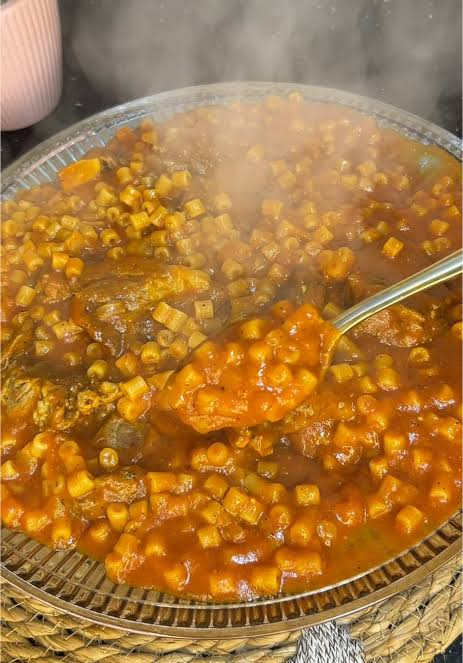

Couscous
Home page

Description
Libyan imbakbka (or mokhbka) is a popular, one-pot comfort food featuring pasta cooked directly in a rich, spiced
tomato and meat broth. It is famous for its thick, saucy consistency and deep flavors infused with garlic,
onions, chili, and warming spices.
Ingredients
- Pasta
- Meat
- Spices
- Tomatoes paste
- Aromatics
- Chickpeas
- Olive Oil
How to make it
- Sauté onions and garlic..
- Brown meat in pot.
- Add spices and tomato paste.
- Pour in chopped tomatoes.
- Add water and chickpeas.
- Simmer until meat is tender.
- Stir in dry pasta..
- Cook until pasta is soft.
- Serve hot in bowls